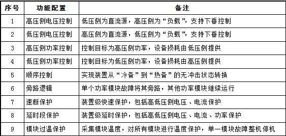
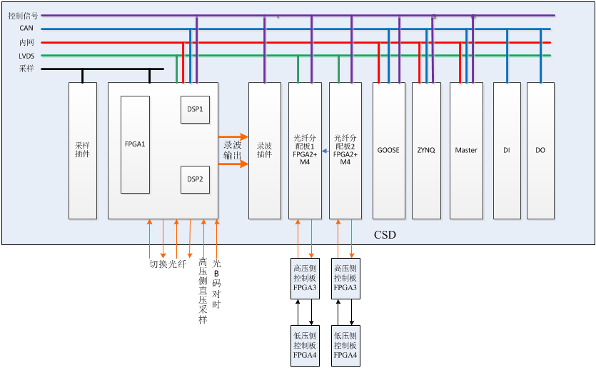

CSD-347B直流配网控保装置，实现串联输入并联输出型电力电子变压器设备的控制与保护。
装置布置在电力电子变压器设备内部，采集功率模块和装置的数据和信号；通过高性能DSP和FPGA实现电力电子变压器的控制和速断保护；运用可视化逻辑，实现对装置各开关的顺序控制及对外接口的实现。
设备对上通过IEC61850与监控系统、能量管理系统等设备实现数据交互，向下通过IEC60044-8与功率模块控制系统进行数据交互，完成电力电子变压器的控制、保护及故障隔离。

功能配置

装置主要特点
1) 每台设备最多支持32个功率模块接入，通过定值可设置接入的模块数，满足不同电压等级、功率等级的需求。
2) 保护配置完善。单个模块故障不影响装置的运行；装置级故障整机跳机，切断装置与系统的联系，不影响系统运行。
3) 设备与模块通过IEC60044-8-FT3协议完成数据交互，数据传输延时固定，便于控制实现。
4) 不同工作模式之间可实现无缝转换，提高设备的利用率。
5) 支持多台电力电力变压器并联运行，方便扩容。
6) 具备两套设备冗余切换功能，单套设备故障时自动切换到另一套设备，减小设备的故障率、提高可靠性。
装置构成
装置采用功能模块化设计思想，功能模块标准化。由CPU插件、管理插件、开入插件、开出插件、GOOSE插件、LOGIC插件、模块接口插件、电源插件等构成。CPU主要完成模拟量采集及控制功能实现、支持光B码对时；管理插件主要完成CPU管理及对监控系统通讯；开入插件负载采集开关量信息；开出插件负责输出刀闸控制指令；GOOSE插件主要完成与能量管理系统的数据交互；LOGIC插件主要完成装置开关的顺讯控制、将控制指令输出至开出插件；模块接口插件作为CPU与模块数据的中转站，实现CPU与模块的数据交互。
